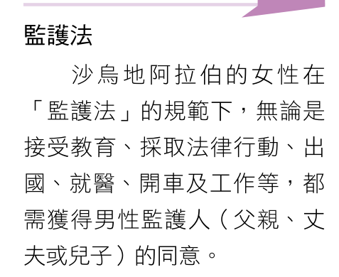
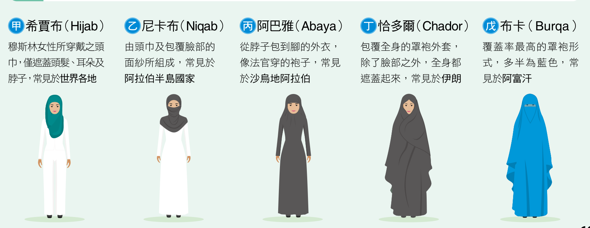

跳到教材內容
學習路線
- 比較土耳其與沙烏地阿拉伯的區域差異。
- 閱讀清真寺建築與女性服裝的圖片和教材說明。
- 整理阿拔斯王朝時期的學術成果，再完成底部測驗。
一、伊斯蘭世界區域差異
- 伊斯蘭世界範圍廣闊，清真寺建築樣式、古蘭經文詮釋、女性規範，以及對西方文化制度的接受程度，都有明顯區域差異。
- 土耳其相對寬容與西化；女性可選擇穿一般服裝，享有受教權、參政權及財產繼承權，並已廢除一夫四妻制度。
- 相較之下，沙烏地阿拉伯奉行較嚴格的教義規範；教材記載女性不得經商、擁有銀行帳戶、自行出國旅遊及開車，並須穿全黑長紗袍才能進入公共場所。
- 教材的「監護法」說明指出，女性接受教育、採取法律行動、出國、就醫、開車及工作等，都需獲得男性監護人（父親、丈夫或兒子）同意。
- 隨著時代演進、教育程度提升及主政者觀念轉變，沙烏地阿拉伯於 2018 年解除女性開車禁令。

- 第68頁「監護法」小百科文字框；內容列出需取得男性監護人同意的事項。
二、清真寺建築
- 清真寺式樣沒有統一規定；各地會依區域環境特性就地取材，也受到埃及、羅馬及波斯等文明影響，形成不同建築風格。
三、女性服裝
- 戴頭巾與穿長袍，能讓游牧民族在沙漠中遮陽、避寒並阻擋風沙。
- 教材指出，傳統教義認為以罩袍遮蓋身體能彰顯宗教身分，也能讓女性「不因外貌差異」而受到歧視或享有特權。
- 各國對遮蔽程度的規定不同，因此伊斯蘭世界女性服裝呈現區域差異。

- 圖3-15｜穆斯林女性服裝樣式；圖中列出五種服裝及教材所述的遮蔽方式與常見地區。
- 希賈布（Hijab）：頭巾遮蓋頭髮、耳朵及脖子，常見於世界各地。
- 尼卡布（Niqab）：由頭巾及包覆臉部的面紗組成，常見於阿拉伯半島國家。
- 阿巴雅（Abaya）：從脖子包到腳的外衣，教材形容像法官穿的袍子，常見於沙烏地阿拉伯。
- 恰多爾（Chador）：包覆全身，露出臉部，常見於伊朗。
- 布卡（Burqa）：教材列出的服裝中覆蓋率最高，多半為藍色，常見於阿富汗。
四、阿拔斯王朝與伊斯蘭學術成果
- 阿拔斯王朝（750–1258）時期，西亞位於東、西方往來的地理位置；政治穩定、貿易興盛、快速累積財富，且對外來文化持開放態度，共同促成伊斯蘭的黃金時代。
- 當時設有研究東、西方學問的智慧宮，翻譯希臘、羅馬、波斯與印度的學術經典，帶動許多知識領域發展。
- 製圖方面運用投影原理，將球體特徵轉換至平面，並結合學者、商人見聞與麥加朝聖旅行指南等，繪製圖文並茂的地圖。
- 地理學方面，教材提及對地形演育、水循環、人與環境互動關係提出新見解。
- 醫學方面，教材列有醫典、醫院、醫生檢定、解剖學、外科學及隔離檢疫。
- 數學方面，教材列有阿拉伯數字、代數、三角函數及幾何。
- 天文學方面，教材記載當時提出地球為球體、自轉並圍繞太陽公轉。
- 教材指出，這些學術成果對後來的地理大發現帶來重大影響。
完成教材閱讀後作答
測驗區
- 模擬題，仿學測風格；題目只依本頁教材內容編寫，不是歷屆試題。
- 答對得分，答錯 0 分。